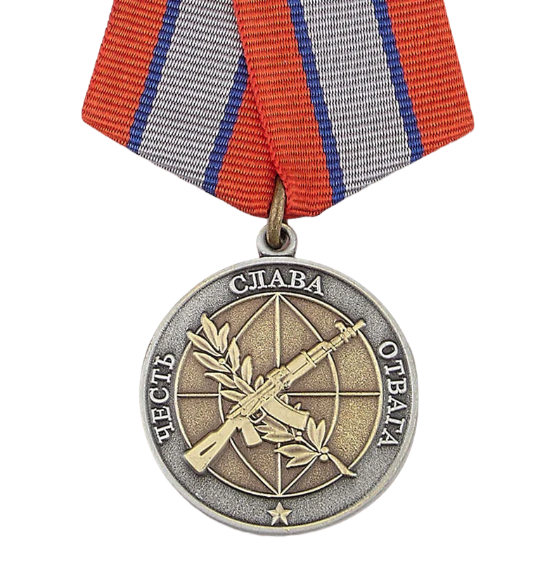
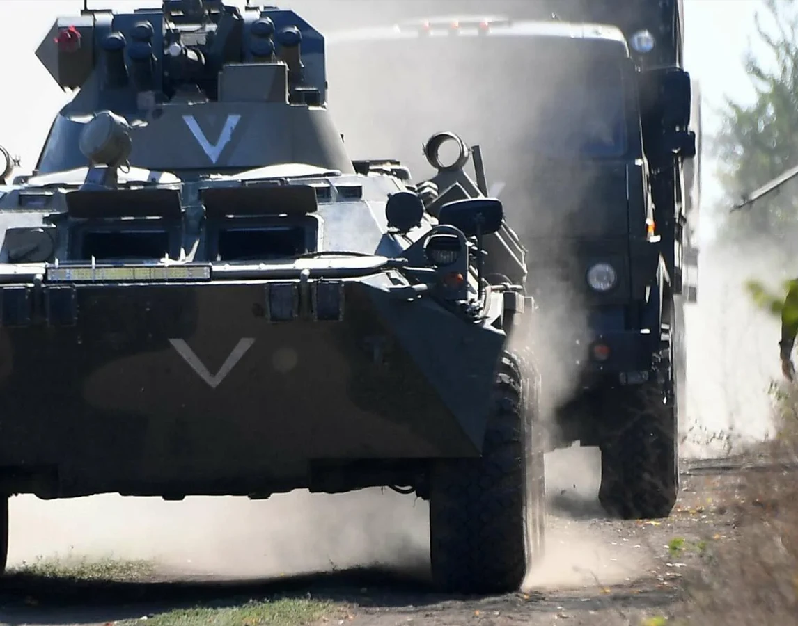
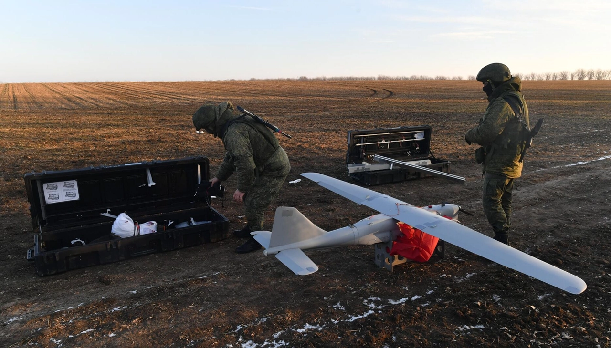
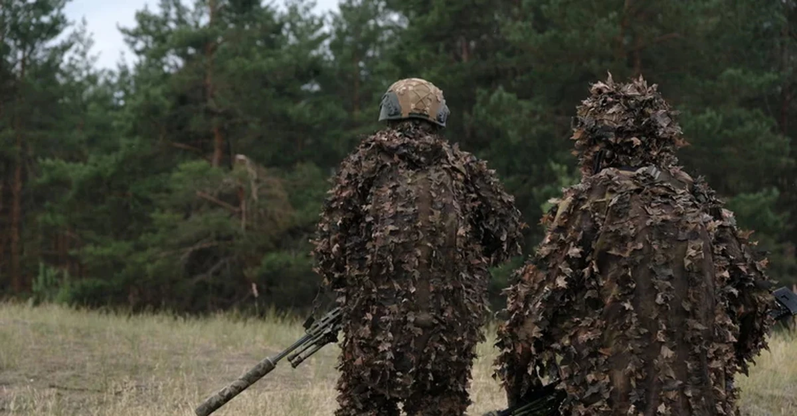
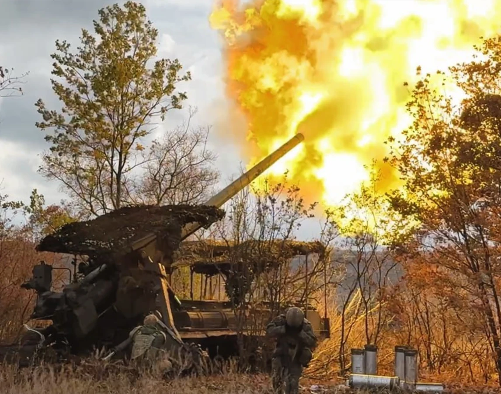
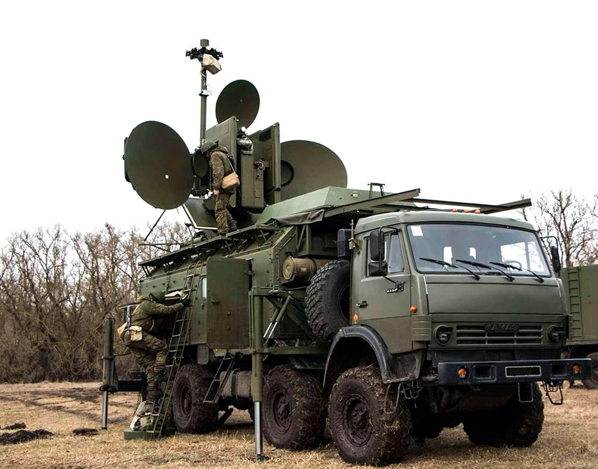
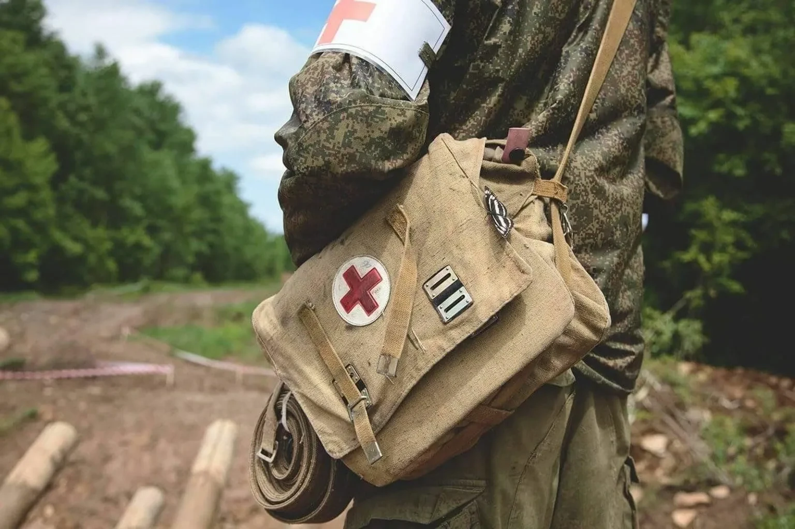
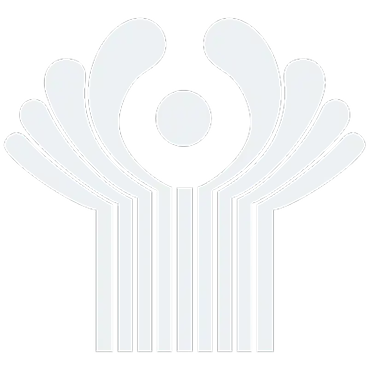

Служба по контракту в Чите
Единовременная выплата 2 400 000 ₽. Полное сопровождение до заключения контракта.
2 400 000 ₽
единовременно
от 210 000 ₽
довольствие/мес
Служба по контракту
в Чите
Единовременная выплата 2 400 000 ₽. Сопровождение до заключения контракта — бесплатно.
2 400 000 ₽
единовременно
от 210 000 ₽
довольствие/мес
Контракт на военную службу в Чите
Что получает контрактник при заключении контракта через ПОВСК в Чите — все выплаты, гарантии и льготы.
2 400 000 ₽
Единовременно
210 000 ₽
Довольствие/мес**
8 000 ₽/день
Боевые/день*
4 970 000 ₽
Годовой доход
** Довольствие складывается из: оклад по должности и званию, надбавка за участие в СВО, доплата за нахождение в зоне боевых действий, надбавка за выслугу лет и классную квалификацию.
* Боевые — дополнительная выплата за дни активных боевых задач (наступление, штурм), сверх ежемесячного довольствия.
Сравнение контрактов: МО РФ и Добровольцы
Контракт с МО (ФЗ-53) и добровольческий контракт (ФЗ-61) — разные документы с разным статусом и условиями.
Добровольцы (ФЗ-61)
от 6 месяцев
1 год (МО РФ)
ФЗ-53
3 года (МО РФ)
ФЗ-53
5 лет (МО РФ)
ФЗ-53
Подробности по каждому сроку уточним при консультации.
Единовременные выплаты при заключении контракта в 2026 году
Суммы, которые выплачиваются после подписания контракта через ПОВСК в Чите.
Федеральная выплата
400 000 ₽
Указ Президента РФ №644 от 31.07.2024
Региональная выплата (Забайкальский край)
2 000 000 ₽
Постановление Правительства Забайкальского края №217 от 25.04.2025
Итого единовременно
2 400 000 ₽
Федеральная выплата единая для всех регионов. Региональная выплата Забайкальского края повышена до 2 000 000 ₽ с 25 апреля 2025 года (Постановление №217). Беззаявительный порядок — выплата производится автоматически по спискам военкомата.
Ежемесячное денежное довольствие в 2026 году
Сколько получает контрактник в Чите в зоне СВО — по должностям и званиям.

| Должность | Довольствие/мес |
|---|---|
| Стрелок / АвтоматчикРядовой | 210 000 ₽ |
| Водитель В, СРядовой / Ефрейтор | от 216 000 ₽ |
| СапёрРядовой / Ефрейтор | от 216 000 ₽ |
| СнайперРядовой / Мл. сержант | 220 000 ₽ |
| Оператор БПЛА / FPVРядовой / Мл. сержант | 225 000 ₽ |
| СвязистРядовой / Сержант | от 224 000 ₽ |
| Механик-водительРядовой / Сержант | от 222 000 ₽ |
| Командир отделенияМл. сержант / Сержант | от 230 000 ₽ |
| Командир взводаЛейтенант / Ст. лейтенант | 270 000 ₽ |
| Командир ротыКапитан / Майор | от 280 000 ₽ |
| Командир батальонаПодполковник / Полковник | от 325 000 ₽ |
Годовой доход: 4 970 000 ₽
Указаны суммы в зоне СВО с учётом боевых надбавок. Денежное довольствие не облагается НДФЛ. Оклады индексируются — с 01.10.2025 повышение на 7,6%.
Боевые выплаты на СВО
Дополнительные выплаты начисляются за непосредственное участие в боевых действиях, выполнение задач и достижение результатов.
Участие в боевых действиях
8 000 ₽/сутки
Ежедневная выплата за нахождение в зоне активных боевых действий. Начисляется за каждые сутки участия.
За продвижение
50 000 ₽/км
Выплата за каждый километр продвижения при выполнении наступательных задач подразделения.
За боевой результат
50 000 — 300 000 ₽
Премия за уничтожение техники и объектов противника. Сумма зависит от типа цели и боевой задачи.
Премия за штурм
100 000 ₽
Разовая выплата за успешное участие в штурмовых действиях и взятие укреплённых позиций.
Премии за захват и уничтожение техники противника
Выплачиваются на основании подтверждённых данных о выполнении задачи.
Захват техники
Уничтожение бронетехники
Уничтожение авиации и ПВО
Уничтожение ракетных систем
Суммы указаны ориентировочно. Точный размер боевых выплат определяется приказами и зависит от конкретных условий выполнения задач.
Доход контрактника за первый год — в Чите (2026)
Подробный расчёт дохода за первый год службы по контракту с Минобороны РФ. Показываем откуда берётся каждая цифра.
Расчёт дохода за год
Единовременная выплата
федеральная 400 000 ₽ + региональная
2 400 000 ₽
Денежное довольствие *
210 000 ₽ × 12 месяцев
от 2 520 000 ₽
ЕДВ ветерану боевых действий
4 839 ₽/мес × 12 месяцев
58 068 ₽
Премии за государственные награды
медали, ордена — разовые выплаты
дополнительно
Премии за уничтожение техники
от 50 000 до 1 000 000 ₽ за единицу
дополнительно
Продвижение по линии фронта
50 000 ₽/км за километр
дополнительно
Итого за первый год
4 970 000 ₽
| Статья дохода | Расчёт | Сумма за год |
|---|---|---|
| Единовременная выплата | федеральная 400 000 ₽ + региональная | 2 400 000 ₽ |
| Денежное довольствие * | 210 000 ₽ × 12 месяцев | от 2 520 000 ₽ |
| ЕДВ ветерану боевых действий | 4 839 ₽/мес × 12 месяцев | 58 068 ₽ |
| Премии за государственные награды | медали, ордена — разовые выплаты | дополнительно |
| Премии за уничтожение техники | от 50 000 до 1 000 000 ₽ за единицу | дополнительно |
| Продвижение по линии фронта | 50 000 ₽/км за километр | дополнительно |
| Итого за первый год | 4 970 000 ₽ | |
* В довольствие уже включены суточные за нахождение в зоне СВО. Премии за уничтожение техники и продвижение начисляются дополнительно и в итог не включены.
Подробный расчёт денежного довольствия
Из чего складывается оклад, надбавки, суточные и боевые — с формулами и примерами
Награды и премии участникам СВО (2026)
Государственные награды дают право на единовременные выплаты, надбавки к денежному довольствию и дополнительные льготы после увольнения. Все боевые выплаты не облагаются НДФЛ.
Государственные и ведомственные награды
| Награда | Выплата |
|---|---|
| Герой Российской ФедерацииЗа выдающиеся подвиги и исключительное мужество | 10 окладов |
| Орден МужестваЗа мужество и отвагу при выполнении воинского долга | 5 окладов |
| Медаль «За отвагу»За личное мужество в боях при защите Отечества | 5 окладов |
| Георгиевский крестЗа подвиги в боевых действиях по защите Отечества | 5 окладов |
| Медаль СувороваЗа мужество в сухопутных операциях, умелое командование | 5 окладов |
| Медаль ЖуковаЗа мужество в боевых действиях и умелое командование | 5 окладов |
| Медаль «За боевые отличия»За отвагу и инициативу при выполнении боевых задач | ведомственная |
| Медаль «Участнику СВО»За выполнение задач в зоне специальной военной операции | ведомственная |
Единовременные выплаты за награды рассчитываются от оклада по званию + должности. ДМО (дополнительное материальное обеспечение) выплачивается после увольнения. Суммы актуальны на момент публикации.
Все награды участникам СВО — подробный справочник
Ордена, медали, выплаты за каждую награду, надбавки к довольствию и льготы после увольнения
Списание долгов и кредитов
Участники СВО защищены от долговой нагрузки: списание кредитов до 10 000 000 ₽, кредитные каникулы и приостановка всех взысканий ФССП.
Федеральный закон №391-ФЗ
Списание кредитов — до 10 000 000 ₽
Полное списание задолженности для участников СВО и членов их семей
Ипотека
Списание остатка по ипотечному кредиту, по которому возбуждено исполнительное производство до 01.12.2024. При гибели — списание в полном объёме, залог снимается.
Потребительские кредиты
Автокредиты, кредитные карты, нецелевые займы — списание в совокупности до 10 000 000 ₽. Распространяется и на долги супруги/супруга.
Микрозаймы (МФО)
Задолженность перед микрофинансовыми организациями списывается, включая начисленные проценты и пени. Кредитор обязан скорректировать кредитную историю в БКИ.
Кредитные каникулы
На весь период участия в СВО + 180 дней после. Без штрафов, пеней. Продлены до 31.12.2026. Дополнительно — на время лечения в госпитале.
Для членов семьи
Супруга/супруг контрактника вправе оформить списание и каникулы. Документы: свидетельство о браке + справка о заключении контракта.
Как оформить
Заявление в ФССП (через Госуслуги или лично) + документы о контракте. Пристав рассматривает в течение 10 рабочих дней и выносит постановление о прекращении ИП.
ФЗ №229-ФЗ «Об исполнительном производстве»
Приостановка взысканий ФССП
С момента заключения контракта все исполнительные производства приостанавливаются на период участия в СВО. Приставы не имеют права взыскивать долги с участника боевых действий.
Арест банковских счетов — снимается, денежное довольствие защищено от взыскания
Удержания из зарплаты — приостанавливаются на весь период СВО
Ограничение на выезд за границу — снимается на время службы
Арест имущества — приостанавливается, реализация имущества запрещена
Алименты и вред здоровью — единственные исключения, по ним взыскание продолжается
Возобновление — не ранее 30 дней после увольнения со службы
ФЗ №229-ФЗ «Об исполнительном производстве»
Приостановка взысканий ФССП
С момента заключения контракта все исполнительные производства приостанавливаются на период участия в СВО. Приставы не имеют права взыскивать долги с участника боевых действий.
Арест банковских счетов — снимается, денежное довольствие защищено от взыскания
Удержания из зарплаты — приостанавливаются на весь период СВО
Ограничение на выезд за границу — снимается на время службы
Арест имущества — приостанавливается, реализация имущества запрещена
Алименты и вред здоровью — единственные исключения, по ним взыскание продолжается
Возобновление — не ранее 30 дней после увольнения со службы
* Списание по ФЗ №391-ФЗ от 23.11.2024 распространяется на долги с возбуждённым исполнительным производством до 01.12.2024. Контракт должен быть на срок не менее 1 года. Кредитные каникулы — ст. 1 ФЗ №377-ФЗ, продлены до 31.12.2026. Приостановка ИП — ст. 40 ФЗ №229-ФЗ.
Страхование и выплаты при ранении (2026)
Каждый контрактник застрахован государством. При ранении, контузии или гибели — гарантированные выплаты военнослужащему или его семье.
Тяжёлое ранение
3 000 000 ₽
Единовременная выплата при тяжёлом ранении, увечье или контузии, полученных при выполнении боевых задач. Выплачивается дополнительно к страховому возмещению.
Лёгкое ранение
1 000 000 ₽
Выплата при лёгком ранении или травме, не повлёкшей инвалидность. Начисляется по факту медицинского заключения ВВК без судебных разбирательств.
Обязательное государственное страхование (ФЗ №52-ФЗ)
Все военнослужащие застрахованы автоматически с момента подписания контракта
| Страховой случай | Сумма |
|---|---|
| Гибель (выплата семье) | 3 683 262 ₽ |
| Гибель (страховое возмещение) | 3 683 262 ₽ |
| Инвалидность I группы | 2 762 446 ₽ |
| Инвалидность II группы | 1 841 630 ₽ |
| Инвалидность III группы | 920 815 ₽ |
| Тяжёлое ранение / увечье / контузия | 3 000 000 ₽ |
| Лёгкое ранение / травма | 1 000 000 ₽ |
Региональная выплата Забайкальского края при гибели
1 000 000 ₽
Выплачивается семье дополнительно к федеральным выплатам и страховому возмещению. Назначается по решению главы субъекта РФ.
Как получить выплату
Основание — заключение ВВК о характере ранения. Выплата начисляется автоматически через финансовый орган воинской части. Срок — до 30 дней с момента заключения ВВК. Обращение в суд не требуется.
Выплаты семье при гибели
Семья получает: единовременную выплату + страховку + региональную выплату + ежемесячную пенсию по потере кормильца. Дети — до 23 лет (если учатся). Супруга — до вступления в повторный брак.
* Страховые выплаты индексированы на 2026 год (+4%, Постановление Правительства №2011 от 11.12.2025). Страховщик — АО «СОГАЗ». Основание — ФЗ №52-ФЗ, Указ Президента РФ №98 от 05.03.2022. Все виды выплат суммируются (страховая + президентская + пособие при увольнении).

Записаться на службу по контракту
Заполните форму — специалист свяжется с вами
Статус ветерана боевых действий
После участия в СВО контрактник получает статус ВБД — пожизненные льготы, ежемесячные выплаты и социальные гарантии на основании ФЗ №5-ФЗ «О ветеранах».

Удостоверение ветерана
Пожизненный статус и льготы
Удостоверение ветерана боевых действий выдаётся участникам СВО — контрактникам и добровольцам. Статус действует бессрочно и даёт право на федеральные и региональные льготы.
Ежемесячно (ЕДВ)
4 839 ₽
Компенсация ЖКУ
50%
Статус
Бессрочно
Ежемесячная выплата (ЕДВ)
4 839 ₽ в месяц с ежегодной индексацией. Назначается через СФР (Социальный фонд России) при предъявлении удостоверения ВБД.
50% компенсация ЖКУ
Компенсация расходов на оплату жилого помещения и коммунальных услуг — 50% от начисленной суммы. Распространяется на членов семьи ветерана.
Налоговые вычеты
Вычет по земельному налогу — 600 м². Вычет по имущественному налогу. Стандартный вычет 500 ₽ по НДФЛ ежемесячно. Освобождение от транспортного налога (по региону).
Трудоустройство и карьера
Приоритет при трудоустройстве и сохранении должности при сокращении. Право на профобучение и переподготовку за счёт работодателя.
Отпуск и проезд
Ежегодный отпуск в удобное время. До 35 дней неоплачиваемого отпуска по запросу. Внеочередное приобретение билетов на все виды транспорта.
Медицина и протезирование
Обслуживание в ведомственных медучреждениях. Бесплатное протезирование (кроме зубного). Внеочередная медицинская помощь по программе ОМС.
Образование
Преимущество при поступлении в вузы (отдельная квота). Бесплатная подготовка к ЕГЭ. Стипендия повышенного размера при обучении на бюджете.
Жилищные льготы
Преимущество при вступлении в жилищные, жилищно-строительные и гаражные кооперативы. Первоочередная установка домашнего телефона.
Льготы для семьи
Компенсация ЖКУ распространяется на нетрудоспособных членов семьи. Дети ветерана — приоритет при зачислении в детский сад и школу.
Как получить статус ВБД
Участие в СВО
Кадровая служба части оформляет удостоверение ВБД перед выездом в зону операции (по рапорту командиру)
Для добровольцев
Заявление в военкомат с документами о выполнении задач в зоне СВО. Срок рассмотрения — до 30 рабочих дней
Назначение ЕДВ
Подача заявления в СФР (через Госуслуги или МФЦ) — для назначения ежемесячной денежной выплаты 4 839 ₽
Оформление льгот
Компенсация ЖКУ, налоговые вычеты, транспортный налог — через Госуслуги, МФЦ или ФНС
* Льготы предоставляются на основании ФЗ №5-ФЗ «О ветеранах» и региональных нормативных актов. Размер ЕДВ указан на 2026 год с учётом индексации.
Жильё и военная ипотека
Контрактники обеспечиваются жильём за счёт государства — служебным или через накопительную систему.
Служебное жильё
На период службы предоставляется служебное жилое помещение или ежемесячная компенсация за наём — до 15 000 ₽/мес для одного, до 27 000 ₽ для семейных.
Военная ипотека (НИС)
Участники СВО включаются в реестр НИС сразу после контракта. Взнос — 411 185 ₽/год. Через 3 года — целевой жилищный займ на покупку квартиры.
Единовременная субсидия
При выслуге 20+ лет — субсидия на покупку жилья. Рассчитывается по нормативу площади и стоимости кв. м в регионе. Для участников СВО — ускоренное начисление выслуги.
Земельный участок для участников СВО
Участники СВО — контрактники, добровольцы и члены их семей — имеют право на бесплатный земельный участок для строительства жилья или ведения хозяйства.

Региональные программы
Бесплатный участок или денежная компенсация
Под ИЖС
4–25 соток
Под ЛПХ
до 40 соток
Компенсация
200–500 тыс. ₽
Размер участка и возможность получения денежной компенсации зависят от субъекта РФ, в котором зарегистрирован участник СВО.
Участок под ИЖС
Бесплатный земельный участок для индивидуального жилищного строительства. Размер — от 4 до 25 соток в зависимости от региона и наличия свободных земель.
Участок под ЛПХ
Земля для ведения личного подсобного хозяйства — до 40 соток. Можно использовать под сад, огород, содержание скота.
Денежная компенсация
В ряде регионов вместо участка можно получить денежную компенсацию — от 200 000 до 500 000 ₽. Выбор за участником СВО.
Как оформить
Заявление через Госуслуги или по доверенности (можно во время службы). Необходимы: удостоверение ВБД, паспорт, справка об отсутствии ранее полученного участка.
Для семей
Право на участок распространяется на членов семей погибших участников СВО. Супруга, дети, родители — могут подать заявление.
Правовое основание
Земельный кодекс РФ, региональные законы субъектов. Условия различаются — в одних регионах участки выделяются быстро, в других — очередь.
* Условия зависят от региона регистрации. Необходим статус участника СВО (удостоверение ВБД) и отсутствие ранее полученного бесплатного участка.
Социальные льготы и гарантии
Работа и стаж. На время службы сохраняются место работы и стаж.
Кредитные каникулы. Возможность приостановить платежи по ипотеке и кредитам.
Налоги. Денежное довольствие и ряд выплат не облагаются НДФЛ.
Пенсия по выслуге. Военная пенсия — при выслуге лет.
Страхование. Жизнь и здоровье военнослужащего застрахованы государством.
Медицина. Лечение и лекарства — через военную медицину (госпитали/медчасти).
Отпуск. Ежегодный оплачиваемый отпуск — 30 суток в год.
Проезд к месту отпуска. Компенсация проезда к месту отпуска и обратно.
Обучение. Переобучение и повышение квалификации по службе.
Пенсия и выслуга лет на СВО
Участие в СВО даёт льготное исчисление выслуги — каждый день засчитывается за два или три. Это позволяет выйти на военную пенсию значительно раньше.
Льготная выслуга
В зоне СВО 1 день считается за 2 дня выслуги. В Белгородской, Брянской и Курской областях — 1 день за 3 дня. 20 лет выслуги можно набрать за 7–10 календарных лет.
Размер пенсии
50% денежного довольствия за 20 лет выслуги + 3% за каждый год сверху (максимум 85%). Средняя военная пенсия в 2026 году — около 46 260 ₽/мес.
Надбавки ВБД
Надбавка 32% к пенсии и ежемесячная денежная выплата — 4 839 ₽/мес. в 2026 году. Возможность получать две пенсии одновременно.
Досрочный выход
Участники СВО выходят на пенсию на 2 года раньше общеустановленного возраста. Удвоенные пенсионные коэффициенты: 3,6 ИПК за год вместо 1,8.
Пример расчёта выслуги
10 лет
Календарных лет службы в зоне СВО (коэффициент 1:2)
= 20 лет
Льготной выслуги — достаточно для военной пенсии
~46 260 ₽
Средний размер военной пенсии в 2026 году + надбавки ВБД
Размер пенсии зависит от должности, звания и срока службы. Индексация 2025: +9,5% с января, +7,6% с октября. Планируется +4% с октября 2026.
Кем можно служить по контракту в Чите
При оформлении контракта можно выбрать специальность с учётом опыта, образования и пожеланий.






Другие специальности
Сапёрные подразделения
Разминирование, установка заграждений, инженерная подготовка позиций
Разведка
Ведение разведки на передовой, корректировка огня, работа в тылу противника
Экипажи бронетехники
Механики-водители БМП, БТР, танков. Боевое применение техники
Водители (В, С, D, E)
Перевозка личного состава, доставка боеприпасов, управление спецтехникой
МТО и снабжение
Материально-техническое обеспечение, ремонт техники, обслуживание вооружения
Повара и хозобеспечение
Организация питания личного состава, полевые кухни, обеспечение быта
Оператор БПЛА — востребованная специальность
Одна из самых востребованных должностей на СВО. Обучение с нуля за 1–3 месяца — теория, симуляторы, полевая практика. Плюс при отборе: опыт с электроникой, радиотехникой, пилотирование гражданских дронов, навыки пайки и сборки.
Требования к кандидатам
- Возраст 18–45 лет, годность по здоровью (категория А или Б)
- Уверенный пользователь смартфона, планшета и цифровой техники
- Базовые навыки работы с картами, координатами, навигацией
- Опыт не обязателен — обучение с нуля от 1 до 3 месяцев
FPV-оператор
Управление FPV-дронами в составе расчёта. Поражение техники, укреплений и живой силы противника.
Оператор разведки
Разведка, наблюдение, передача координат и видео. Корректировка артиллерийского огня.
Оператор ударных БПЛА
Применение ударных дронов по целеуказанию. Работа с дронами-камикадзе типа «Ланцет».
Техник БПЛА
Сборка, пайка, настройка и обслуживание дронов. Ремонт в полевых условиях.
Заявка на службу оператором БПЛА
Кому подходит контрактная служба
Основные требования к кандидатам на заключение контракта в Чите.
Возраст: 18–64 года
Верхний предел — 64 года. Для операторов БПЛА — до 45 лет.
Гражданство
Граждане РФ — от 18 до 64 лет. Иностранные граждане — от 18 до 64 лет (ФЗ-53, ст. 34). Второе гражданство — основание для отказа.
Категория годности А, Б или В
ВВК обязательно. А и Б — без ограничений. В — связь, БПЛА, тыл.
Без непогашенной судимости
Погашенная судимость — не препятствие. Непогашенная — отказ.
Образование — от среднего
Минимум — 11 классов. Высшее/СПО — преимущество при выборе специальности.
Опыт службы не обязателен
Контракт можно заключить без военного опыта. После подписания — подготовка от 30 дней.
Контракт при наличии судимости
Погашенная или снятая судимость — не препятствие для заключения контракта. Разбираем все случаи: кого берут, кого нет, и что делать, если есть открытое дело.
Погашенная судимость
Контракт заключается на общих основаниях. Судимость считается погашенной по ст. 86 УК РФ: условный срок — после испытательного периода; мягче лишения свободы — через 1 год; небольшой/средней тяжести — 3 года; тяжкие — 8 лет; особо тяжкие — 10 лет.
Снятая судимость
Если суд снял судимость досрочно (ст. 86 ч. 5 УК РФ) или по амнистии — ограничений нет. Факт снятия фиксируется в справке ИЦ МВД, которую запрашивает ПОВСК при оформлении.
Под следствием или судом
Если уголовное дело ещё не завершено — контракт невозможен до вынесения приговора. После приговора возможно освобождение от наказания по ст. 80.2 УК РФ при заключении контракта на военную службу.
Освобождение от наказания (ст. 80.2 УК РФ)
Осуждённые (кроме ряда статей — см. ст. 78.1 УК РФ) могут быть условно освобождены от наказания при заключении контракта на военную службу. Полное освобождение — при получении государственной награды или увольнении по установленным основаниям.
Непогашенная судимость
Контракт на общих основаниях невозможен. Однако по ст. 80.2 УК РФ суд может условно освободить от наказания при заключении контракта на военную службу. Контроль — за командованием воинской части.
Исключения — кого не берут
Не подлежат освобождению по ст. 78.1 УК РФ: терроризм (ст. 205–205.5), госизмена и шпионаж (ст. 275–280.2, 283–284), половые преступления против несовершеннолетних (ст. 131–135), оборот ядерных материалов (ст. 220–221, 226.1).
* Основание: ФЗ-53 «О воинской обязанности и военной службе», ст. 34; УК РФ, ст. 80.2 (освобождение от наказания при военной службе), ст. 78.1 (исключения), ст. 86 (погашение и снятие судимости). Каждый случай индивидуален — уточним при консультации.
Медицинские ограничения и категории годности
Для заключения контракта необходимо пройти военно-врачебную комиссию (ВВК). Категория годности определяет, на какие должности можно претендовать.
Категории годности к военной службе
Расписание болезней — Постановление Правительства РФ №565
Годен без ограничений
Полностью здоров. Любые должности и рода войск, включая ВДВ, спецназ, морскую пехоту.
Годен с незначительными ограничениями
Мелкие нарушения здоровья (лёгкая близорукость, плоскостопие I степени и т.д.). Большинство должностей доступны: пехота, БПЛА, артиллерия, связь, водители.
Ограниченно годен
Заболевания, не мешающие нестроевой службе: связь, БПЛА, тыловое обеспечение, штаб, медпункт. С 2022 года категория «В» — не отказ, а ограничение по должностям.
Временно не годен
Требуется лечение: переломы, операции, обострение хронических заболеваний. После выздоровления — повторная ВВК. Контракт откладывается, но не исключается.
Не годен
Тяжёлые заболевания: злокачественные опухоли, тяжёлые психические расстройства, полная слепота, тяжёлая сердечная недостаточность. Контракт невозможен.
Абсолютные противопоказания
- —Злокачественные новообразования
- —Шизофрения, тяжёлые психические расстройства
- —Эпилепсия с частыми приступами
- —Полная слепота или глухота
- —Тяжёлая сердечная недостаточность (III–IV ФК)
- —Наркотическая зависимость (без ремиссии)
Берут с ограничениями (категория Б/В)
- +Близорукость до −6 диоптрий
- +Плоскостопие I–II степени
- +Гипертония I стадии (до 159/99)
- +Сколиоз до 17° (I–II степень)
- +Варикоз без осложнений
- +Хронический гастрит в ремиссии
- +Аллергия (без анафилаксии в анамнезе)
Как проходит ВВК
Военно-врачебная комиссия — обязательный этап перед подписанием контракта
Осмотр врачей
- Терапевт
- Хирург
- Невролог
- Психиатр
- Офтальмолог
- Отоларинголог
- Дерматолог
- Стоматолог
Анализы и обследования
- Общий анализ крови
- Кровь на ВИЧ
- Кровь на гепатит B и C
- Кровь на сифилис (RW)
- Общий анализ мочи
- ЭКГ (электрокардиограмма)
- Флюорография
Сроки и результат
1–3 дня
Срок прохождения комиссии
Категория А, Б или В
Допуск к заключению контракта
Категория Г
Лечение + повторная ВВК через 1–6 мес.
Категория Д
Отказ — контракт невозможен
* Расписание болезней — Приложение к Постановлению Правительства РФ №565 от 04.07.2013 (в ред. 2024). Категория годности определяется врачами ВВК индивидуально. Наличие хронического заболевания не всегда означает отказ — всё зависит от стадии, течения и должности.
Как оформить контракт в Чите в 2026 году
Пошаговый процесс от заявки до подписания контракта. Мы сопровождаем на каждом этапе.
Подача заявки
Оставьте заявку на сайте или позвоните по телефону. Специалист свяжется с вами, уточнит детали и подберёт подходящую воинскую специальность.
Подготовка документов
Специалист поможет собрать пакет документов: паспорт, СНИЛС, ИНН, военный билет, справки. Подготовка занимает 1–3 дня.
Прохождение ВВК
Военно-врачебная комиссия проводится на базе ПОВСК или в военном госпитале. Включает осмотр терапевтом, хирургом, неврологом, психиатром и другими специалистами.
Визит в ПОВСК
Специалист сопровождает вас в пункт отбора на ул. Амурская, 9, Чита. Собеседование, проверка документов и выбор воинской части.
Подписание контракта
Контракт заключается на срок от 1 года. Форма типовая, утверждена Указом Президента РФ. Вы получаете свой экземпляр контракта — храните его.
Прохождение подготовки
После подписания контракта — учебный сбор от 30 дней. Базовая военная подготовка, стрельба, тактика, первая помощь. Затем — направление в воинскую часть.

Подготовка и обучение
После подписания контракта — обязательная боевая подготовка. Программа зависит от выбранной специальности.
Базовая подготовка — от 30 дней
Строевая, огневая, тактическая подготовка, первая помощь, инженерка
Специальная подготовка — 1–3 месяца
По специальности: БПЛА, снайпинг, связь, сапёрное дело. Реальная техника
Слаживание подразделения
Тактика малых групп, взаимодействие, действия при контакте
Полигонные стрельбы
Автомат, пулемёт, гранатомёт. Для БПЛА — практика с дронами и сброса
Пункт отбора на военную службу по контракту
Адрес и график работы ПОВСК в Чите — сюда нужно прийти для подписания контракта.
Адрес
ул. Амурская, д. 9, Чита
Режим работы
пн–пт 09:00–18:00
Мы сопровождаем кандидатов до заключения контракта на военную службу — помогаем подготовить документы, пройти ВВК и записаться на приём. Оставьте заявку, и специалист свяжется с вами.
Анкета кандидата на контрактную службу
В пункте отбора (ПОВСК) заполняется анкета — данные о кандидате, образовании, здоровье и опыте службы. Скачайте бланк заранее, чтобы подготовиться и ускорить оформление.
Документы для оформления контракта на СВО
Паспорт гражданина РФ
Оригинал действующего паспорта и копии страниц с фото, персональными данными и регистрацией. Необходим для оформления контракта с Минобороны.
СНИЛС
Оригинал или копия. Используется для оформления денежного довольствия, учёта стажа и социальных выплат военнослужащему по контракту.
ИНН
Копия свидетельства о присвоении ИНН или выписка с сайта ФНС. Требуется для налогового учёта выплат по службе.
Справки от психиатра и нарколога
Оригиналы справок об отсутствии учёта в психоневрологическом и наркологическом диспансерах по месту регистрации. Действительны до 3 месяцев.
Медицинские анализы
Справки с результатами анализов на ВИЧ, гепатит B и C, сифилис. Можно сдать по направлению военкомата, на ВВК или в лицензированном медучреждении.
Военный билет или приписное
Оригинал военного билета либо приписное удостоверение призывника. Подтверждает постановку на воинский учёт.
Анкета кандидата на контрактную службу
В пункте отбора (ПОВСК) заполняется анкета — данные о кандидате, образовании, здоровье и опыте службы. Скачайте бланк заранее, чтобы подготовиться и ускорить оформление.

Иностранным гражданам
Паспорт иностранного гражданина
Действующий паспорт + нотариально заверенный перевод на русский язык.
Миграционная карта
Действующая миграционная карта, полученная при въезде в РФ. Для граждан Республики Беларусь не оформляется.
Реабилитация и медицинская поддержка
Государство обеспечивает полный цикл медицинской помощи — от лечения до социальной адаптации.
Военные госпитали и санатории
Бесплатное лечение и восстановление в учреждениях МО РФ. Индивидуальная программа реабилитации в зависимости от тяжести состояния. Компенсация проезда к месту лечения и обратно.
Протезирование и ортопедия
Бесплатное протезирование конечностей, ортопедические изделия и технические средства реабилитации. Финансирование через Социальный фонд России (СФР).
Психологическая помощь
Бесплатная психологическая и психотерапевтическая поддержка для военнослужащих и членов их семей. Помощь в адаптации после возвращения со службы.
Санаторно-курортное лечение
Путёвки в санатории за счёт государства. Герои России и инвалиды I группы — внеочередное направление. Возможность сопровождения членом семьи.
Экипировка и снаряжение контрактника
После подписания контракта и прохождения обучения контрактники ставятся на полное вещевое довольствие.
Форма и нательное бельё
Летняя и зимняя форма, рассчитанная на разные температурные режимы и условия службы. Нательное бельё, демисезонная одежда.
Защита головы и рук
Шапка-маска (балаклава), утеплённая ушанка, демисезонная фуражка. Полушерстяные перчатки, утеплённые рукавицы со съёмным утеплителем.
Обувь
Летние и зимние носки. Обувь для температурного режима от −10 до +15 °C и от −10 до −40 °C. Баул для транспортировки комплекта.
Средства защиты и оружие
Бронежилет, каска, средства индивидуальной защиты. Личное оружие и боеприпасы по штатному расписанию подразделения.
Контрактники получают экипировку и снаряжение по стандартам Минобороны РФ. Полный комплект выдаётся после подписания контракта и прохождения подготовки.
Правовое основание
Нормативные акты, на которых основаны указанные выплаты и гарантии.
- Указ Президента РФ от 31.07.2024 №644 «О единовременной денежной выплате» — федеральная выплата 400 000 ₽
- Указ Президента РФ №644 от 31.07.2024 в редакции Указа №1111 от 26.12.2024 — снятие временного ограничения по датам заключения контракта; последующая редакция — Указ №132 от 04.03.2026 (расширение получателей на лиц без гражданства)
- Постановление Правительства Забайкальского края от 22.01.2025 №14 — порядок региональных выплат
- Постановление Правительства Забайкальского края от 25.04.2025 №217 — региональная выплата 2 000 000 ₽
- ФЗ от 28.03.1998 №53-ФЗ «О воинской обязанности и военной службе»
- ФЗ от 27.05.1998 №76-ФЗ «О статусе военнослужащих»
- ФЗ от 07.11.2011 №306-ФЗ «О денежном довольствии военнослужащих»
- ФЗ от 23.11.2024 №391-ФЗ — списание кредитов участникам СВО
Как росли выплаты в Чите
Хронология изменений единовременных выплат при заключении контракта — федеральная и региональная части.
| Период | Федеральная | Региональная | Итого |
|---|---|---|---|
| 2022–2024 | 195 000 → 400 000 ₽ | 200 000 → ~600 000 ₽ | 800 000 ₽ |
| 2025 (янв.) | 400 000 ₽ | 600 000 ₽ | 1 000 000 ₽ |
| 2025 (фев.) | 400 000 ₽ | 600 000 ₽ | 1 000 000 ₽ |
| 2025 (апр.) | 400 000 ₽ | 2 000 000 ₽ | 2 400 000 ₽ |
2022–2024: Постепенный рост выплат
2025 (янв.): Постановление №14 от 22.01.2025
2025 (фев.): Уточнения — Постановление №73 от 18.02.2025
2025 (апр.): Постановление №217 от 25.04.2025 — региональная до 2 000 000 ₽
Записаться на службу по контракту
Заполните форму — специалист свяжется с вами
Полезные статьи
Подробнее об условиях контракта и выплатах
Условия контракта на СВО в 2026 году — выплаты, срок, требования
К весне 2026-го правила заметно обновились. За прошедший год часть норм расширили, часть уточнили. Появились новые льготы, сдвинулись возрастные границы, вышел свежий список медицинских…
Как подписать контракт на СВО в 2026 году — пошаговая инструкция
Решение пойти на службу — это только первый шаг. Дальше начинается технический процесс: документы, поход в пункт отбора, медкомиссия, тестирование, собеседование, само подписание. У многих из тех,…
Где больше платят за контракт СВО — топ регионов России в 2026 году
Если вы решили заключить договор с Минобороны и можете выбирать, в каком регионе оформляться, — стоит знать, где платят больше. Разница между «дешёвым» и «дорогим» субъектом достигает трёх раз: в…
Набор на СВО по контракту 2026 — кто нужен, как попасть, что обещают
К весне 2026-го характер набора заметно изменился. Если в 2022–2023 годах Минобороны брало в основном людей под штурмовые задачи, то сейчас потребность сместилась в сторону технических специалистов:…
Частые вопросы о контракте в Чите
Контракт в других городах
Выплаты и условия службы по контракту в других регионах России.


Контракт с Минобороны РФ
Отправка на службу по контракту
По специальности
Содействие, сопровождение и маршрут до приёма и оформления
* Информация на странице носит справочный характер и основана на открытых нормативных актах. Суммы выплат актуальны на момент публикации и могут быть изменены по решению Правительства РФ или главы субъекта. Сайт contractarmy.ru не является государственной или военной структурой. Мы оказываем бесплатное содействие в подготовке документов и сопровождении до заключения контракта на военную службу. Подробнее — в дисклеймере.